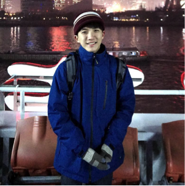

主題說明
這是一個能與設計好的演算法所控制的角色來進行分數競賽的網頁遊戲
程式說明
透過HTML5的Canvas與少量css加上大量的javaScript來完成了此網頁
透過自行設計的一套演算法，讓程式控制一隻角色，
而使用者控制另一隻角色，來互相競賽。
遊戲地圖上方提供了能設定遊戲的難易程度與勝利條件的下拉式選項，
並且還能透過重新按鈕開始來開啟新的賽局。
整個網頁除了遊戲地圖與障礙物的石頭是使用網路上的資源，
其餘的角色與目標物都是由家中大姐幫忙設計並繪製。學習心得
這個作業算是修課以來靠自己完成所有部分的一次，且因為是自己設計讓電腦自己行走的演算法
讓我練習使用了大量的javaScript，並進行了多次的debug...，雖然目前的演算法走的並非是最短路徑
而是選擇當前目標物那側的最近缺口，以此接續下去，但考量到如果要自己設計出能走最短路徑的演算法，
要花費許多時間，因此打算在暑假有空時再來進行嘗試。
目前最讓我感到困擾的是有關於css的排版，幾乎沒辦法隨心所欲的操控，
只好將排版全部置中，希望能越來越熟悉css的使用。
最後要感謝我的老姐願意接受我的請求，抽空幫我設計遊戲中的角色與目標物！
點擊以下此圖可連結到老姐的美術作品
個人簡介
|

|
-姓名：黃令傑 |
| -系級：資管三A |
| -出生地：台灣 |
| -興趣：看影集、了解新的科技技術 |